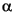
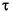
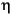
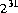
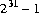
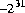
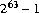
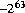
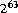

int is larger than 2147483648 ( ), or if the literal
), or if the literal 2147483648 appears anywhere other than as the operand of the unary - operator, or if a hexadecimal or octal int literal does not fit in 32 bits.CHAPTER 3
This chapter specifies the lexical structure of Java.
Java programs are written in Unicode (§3.1), but lexical translations are provided (§3.2) so that Unicode escapes (§3.3) can be used to include any Unicode character using only ASCII characters. Line terminators are defined (§3.4) to support the different conventions of existing host systems while maintaining consistent line numbers.
The Unicode characters resulting from the lexical translations are reduced to a sequence of input elements (§3.5), which are white space (§3.6), comments (§3.7), and tokens. The tokens are the identifiers (§3.8), keywords (§3.9), literals (§3.10), separators (§3.11), and operators (§3.12) of the Java syntactic grammar.
Versions of Java prior to 1.1 used Unicode version 1.1.5 (see The Unicode Standard: Worldwide Character Encoding (§1.2) and updates). See §20.5 for a discussion of the differences between Unicode version 1.1.5 and Unicode version 2.0.http://www.unicode.organdftp://unicode.org
Except for comments (§3.7), identifiers, and the contents of character and string literals (§3.10.4, §3.10.5), all input elements (§3.5) in a Java program are formed only from ASCII characters (or Unicode escapes (§3.3) which result in ASCII characters). ASCII (ANSI X3.4) is the American Standard Code for Information Interchange. The first 128 characters of the Unicode character encoding are the ASCII characters.
\uxxxx, where xxxx is a hexadecimal value, represents the Unicode character whose encoding is xxxx. This translation step allows any Java program to be expressed using only ASCII characters.
a--b are tokenized (§3.5) as a, --, b, which is not part of any grammatically correct Java program, even though the tokenization a, -, -, b could be part of a grammatically correct Java program.\u followed by four hexadecimal digits to the Unicode character
with the indicated hexadecimal value, and passing all other characters
unchanged. This translation step results in a sequence of Unicode input characters:
UnicodeInputCharacter:The
UnicodeEscape
RawInputCharacter UnicodeEscape:
\UnicodeMarkerHexDigitHexDigitHexDigitHexDigit UnicodeMarker:
uUnicodeMarker
uRawInputCharacter:
any Unicode character HexDigit: one of
0 1 2 3 4 5 6 7 8 9 a b c d e f A B C D E F
\, u, and hexadecimal digits here are all ASCII characters.
In addition to the processing implied by the grammar, for each raw input character that is a backslash \, input processing must consider how many other \ characters contiguously precede it, separating it from a non-\ character or the start of the input stream. If this number is even, then the \ is eligible to begin a Unicode escape; if the number is odd, then the \ is not eligible to begin a Unicode escape. For example, the raw input "\\u2297=\u2297" results in the eleven characters " \ \ u 2 2 9 7 = " (\u2297 is the Unicode encoding of the character "").
If an eligible \ is not followed by u, then it is treated as a RawInputCharacter and remains part of the escaped Unicode stream. If an eligible \ is followed by u, or more than one u, and the last u is not followed by four hexadecimal digits, then a compile-time error occurs.
The character produced by a Unicode escape does not participate in further Unicode escapes. For example, the raw input \u005cu005a results in the six characters \ u 0 0 5 a, because 005c is the Unicode value for \. It does not result in the character Z, which is Unicode character 005a, because the \ that resulted from the \u005c is not interpreted as the start of a further Unicode escape.
Java specifies a standard way of transforming a Unicode Java program into ASCII that changes a Java program into a form that can be processed by ASCII-based tools. The transformation involves converting any Unicode escapes in the source text of the program to ASCII by adding an extra u-for example, \uxxxx becomes \uuxxxx-while simultaneously converting non-ASCII characters in the source text to a \uxxxx escape containing a single u. This transformed version is equally acceptable to a Java compiler and represents the exact same program. The exact Unicode source can later be restored from this ASCII form by converting each escape sequence where multiple u's are present to a sequence of Unicode characters with one fewer u, while simultaneously converting each escape sequence with a single u to the corresponding single Unicode character.
Java systems should use the \uxxxx notation as an output format to display Unicode characters when a suitable font is not available.
// form of a comment (§3.7).
LineTerminator:Lines are terminated by the ASCII characters CR, or LF, or CR LF. The two characters CR immediately followed by LF are counted as one line terminator, not two. The result is a sequence of line terminators and input characters, which are the terminal symbols for the third step in the tokenization process.
the ASCII LF character, also known as "newline"
the ASCII CR character, also known as "return"
the ASCII CR character followed by the ASCII LF character InputCharacter:
UnicodeInputCharacter but not CR or LF
This process is specified by the following productions:
Input:White space (§3.6) and comments (§3.7) can serve to separate tokens that, if adjacent, might be tokenized in another manner. For example, the ASCII characters
InputElementsoptSubopt InputElements:
InputElement
InputElementsInputElement InputElement:
WhiteSpace
Comment
Token Token:
Identifier
Keyword
Literal
Separator
Operator Sub:
the ASCII SUB character, also known as "control-Z"
- and = in the input can form the operator token -= (§3.12) only if there is no intervening white space or comment.
As a special concession for compatibility with certain operating systems, the ASCII SUB character (\u001a, or control-Z) is ignored if it is the last character in the escaped input stream.
Consider two tokens x and y in the resulting input stream. If x precedes y, then we say that x is to the left of y and that y is to the right of x. For example, in this simple piece of Java code:
class Empty {
}
we say that the } token is to the right of the { token, even though it appears, in this
two-dimensional representation on paper, downward and to the left of the { token.
This convention about the use of the words left and right allows us to speak, for
example, of the right-hand operand of a binary operator or of the left-hand side of
an assignment.
WhiteSpace:
the ASCII SP character, also known as "space"
the ASCII HT character, also known as "horizontal tab"
the ASCII FF character, also known as "form feed"
LineTerminator
/* text */ A traditional comment: all the text from the ASCII characters /* to the ASCII characters */ is ignored (as in C and C++).
// text A single-line comment: all the text from the ASCII characters // to the end of the line is ignored (as in C++).
/** documentation */ A documentation comment: the text enclosed by the ASCII characters /** and */ can be processed by a separate tool to prepare automatically generated documentation of the following class, interface, constructor, or member (method or field) declaration. See §18 for a full description of how the supplied documentation is processed.
These comments are formally specified by the following productions:
Comment:These productions imply all of the following properties:
TraditionalComment
EndOfLineComment
DocumentationComment TraditionalComment:
/ *NotStarCommentTail EndOfLineComment:
/ /CharactersInLineoptLineTerminator DocumentationComment:
/ * *CommentTailStar CommentTail:
*CommentTailStar
NotStarCommentTail CommentTailStar:
/CommentTailStar
*
NotStarNotSlashCommentTail NotStar:
InputCharacter but not*LineTerminator NotStarNotSlash:
InputCharacter but not*or/LineTerminator CharactersInLine:
InputCharacter
CharactersInLineInputCharacter
/* and */ have no special meaning in comments that begin with //.
// has no special meaning in comments that begin with /* or /**.
/* this comment /* // /** ends here: */
is a single complete comment.
The lexical grammar implies that comments do not occur within character literals (§3.10.4) or string literals (§3.10.5).
Note that /**/ is considered to be a documentation comment, while /* */ (with a space between the asterisks) is a traditional comment.
Identifier:Letters and digits may be drawn from the entire Unicode character set, which supports most writing scripts in use in the world today, including the large sets for Chinese, Japanese, and Korean. This allows Java programmers to use identifiers in their programs that are written in their native languages.
IdentifierChars but not a Keyword or BooleanLiteral or NullLiteral IdentifierChars:
JavaLetter
IdentifierCharsJavaLetterOrDigit JavaLetter:
any Unicode character that is a Java letter (see below) JavaLetterOrDigit:
any Unicode character that is a Java letter-or-digit (see below)
A Java letter is a character for which the method Character.isJavaLetter (§20.5.17) returns true. A Java letter-or-digit is a character for which the method Character.isJavaLetterOrDigit (§20.5.18) returns true.
The Java letters include uppercase and lowercase ASCII Latin letters A-Z (\u0041-\u005a), and a-z (\u0061-\u007a), and, for historical reasons, the ASCII underscore (_, or \u005f) and dollar sign ($, or \u0024). The $ character should be used only in mechanically generated Java code or, rarely, to access preexisting names on legacy systems.
The Java digits include the ASCII digits 0-9 (\u0030-\u0039).
Two identifiers are the same only if they are identical, that is, have the same Unicode character for each letter or digit.
Identifiers that have the same external appearance may yet be different. For example, the identifiers consisting of the single letters LATIN CAPITAL LETTER A (A, \u0041), LATIN SMALL LETTER A (a, \u0061), GREEK CAPITAL LETTER ALPHA (A, \u0391), and CYRILLIC SMALL LETTER A (a, \u0430) are all different.
Unicode composite characters are different from the decomposed characters. For example, a LATIN CAPITAL LETTER A ACUTE (Á, \u00c1) could be considered to be the same as a LATIN CAPITAL LETTER A (A, \u0041) immediately followed by a NON-SPACING ACUTE (´, \u0301) when sorting, but these are different in Java identifiers. See The Unicode Standard, Volume 1, pages 412ff for details about decomposition, and see pages 626-627 of that work for details about sorting.
String i3  MAX_VALUE isLetterOrDigit
Keyword: one ofThe keywords
abstract default if private throw
boolean do implements protected throws
break double import public transient
byte else instanceof return try
case extends int short void
catch final interface static volatile
char finally long super while
class float native switch
const for new synchronized
continue goto package this
const and goto are reserved by Java, even though they are not currently used in Java. This may allow a Java compiler to produce better error messages if these C++ keywords incorrectly appear in Java programs.
While true and false might appear to be keywords, they are technically Boolean literals (§3.10.3). Similarly, while null might appear to be a keyword, it is technically the null literal (§3.10.7).
String type (§4.3.3, §20.12), or the null type (§4.1):
Literal:
IntegerLiteral
FloatingPointLiteral
BooleanLiteral
CharacterLiteral
StringLiteral
NullLiteral
An integer literal may be expressed in decimal (base 10), hexadecimal (base 16), or octal (base 8):
IntegerLiteral:An integer literal is of type
DecimalIntegerLiteral
HexIntegerLiteral
OctalIntegerLiteral DecimalIntegerLiteral:
DecimalNumeralIntegerTypeSuffixopt HexIntegerLiteral:
HexNumeralIntegerTypeSuffixopt OctalIntegerLiteral:
OctalNumeralIntegerTypeSuffixopt IntegerTypeSuffix: one of
l L
long if it is suffixed with an ASCII letter L or l (ell); otherwise it is of type int (§4.2.1). The suffix L is preferred, because the letter l (ell) is often hard to distinguish from the digit 1 (one).
A decimal numeral is either the single ASCII character 0, representing the integer zero, or consists of an ASCII digit from 1 to 9, optionally followed by one or more ASCII digits from 0 to 9, representing a positive integer:
DecimalNumeral:A hexadecimal numeral consists of the leading ASCII characters
0NonZeroDigit
Digitsopt Digits:
Digit
DigitsDigit Digit:
0NonZeroDigit NonZeroDigit: one of
1 2 3 4 5 6 7 8 9
0x or 0X followed by one or more ASCII hexadecimal digits and can represent a positive, zero, or negative integer. Hexadecimal digits with values 10 through 15 are represented by the ASCII letters a through f or A through F, respectively; each letter used as a hexadecimal digit may be uppercase or lowercase.
HexNumeral:The following production from §3.3 is repeated here for clarity:
0 xHexDigit
0 XHexDigit
HexNumeralHexDigit
HexDigit: one ofAn octal numeral consists of an ASCII digit
0 1 2 3 4 5 6 7 8 9 a b c d e f A B C D E F
0 followed by one or more of the ASCII digits 0 through 7 and can represent a positive, zero, or negative integer.
OctalNumeral:Note that octal numerals are always consist of two or more digits;
0OctalDigit
OctalNumeralOctalDigit OctalDigit: one of
0 1 2 3 4 5 6 7
0 is always considered to be a decimal numeral-not that it matters much in practice, for the numerals 0, 00, and 0x0 all represent exactly the same integer value.
The largest decimal literal of type int is 2147483648 (). All decimal literals from 0 to 2147483647 may appear anywhere an int literal may appear, but the literal 2147483648 may appear only as the operand of the unary negation operator -.
The largest positive hexadecimal and octal literals of type int are 0x7fffffff and 017777777777, respectively, which equal 2147483647 (). The most negative hexadecimal and octal literals of type int are 0x80000000 and 020000000000, respectively, each of which represents the decimal value -2147483648 (). The hexadecimal and octal literals 0xffffffff and 037777777777, respectively, represent the decimal value -1.
See also Integer.MIN_VALUE (§20.7.1) and Integer.MAX_VALUE (§20.7.2).
A compile-time error occurs if a decimal literal of type int is larger than 2147483648 (), or if the literal 2147483648 appears anywhere other than as the operand of the unary - operator, or if a hexadecimal or octal int literal does not fit in 32 bits.
0 2 0372 0xDadaCafe 1996 0x00FF00FFThe largest decimal literal of type
long is 9223372036854775808L ( ). All decimal literals from
). All decimal literals from 0L to 9223372036854775807L may appear anywhere a long literal may appear, but the literal 9223372036854775808L may appear only as the operand of the unary negation operator -.
The largest positive hexadecimal and octal literals of type long are 0x7fffffffffffffffL and 0777777777777777777777L, respectively, which equal 9223372036854775807L (). The literals 0x8000000000000000L and 01000000000000000000000L are the most negative long hexadecimal and octal literals, respectively. Each has the decimal value -9223372036854775808L (). The hexadecimal and octal literals 0xffffffffffffffffL and 01777777777777777777777L, respectively, represent the decimal value -1L.
See also Long.MIN_VALUE (§20.8.1) and Long.MAX_VALUE (§20.8.2).
A compile-time error occurs if a decimal literal of type long is larger than 9223372036854775808L (), or if the literal 9223372036854775808L appears anywhere other than as the operand of the unary - operator, or if a hexadecimal or octal long literal does not fit in 64 bits.
0l 0777L 0x100000000L 2147483648L 0xC0B0L
A floating-point literal has the following parts: a whole-number part, a decimal point (represented by an ASCII period character), a fractional part, an exponent, and a type suffix. The exponent, if present, is indicated by the ASCII letter e or E followed by an optionally signed integer.
At least one digit, in either the whole number or the fraction part, and either a decimal point, an exponent, or a float type suffix are required. All other parts are optional.
A floating-point literal is of type float if it is suffixed with an ASCII letter F or f; otherwise its type is double and it can optionally be suffixed with an ASCII letter D or d.
FloatingPointLiteral:The Java types
Digits.DigitsoptExponentPartoptFloatTypeSuffixopt
.DigitsExponentPartoptFloatTypeSuffixopt
DigitsExponentPartFloatTypeSuffixopt
DigitsExponentPartoptFloatTypeSuffix ExponentPart:
ExponentIndicatorSignedInteger ExponentIndicator: one of
e ESignedInteger:
SignoptDigits Sign: one of
+ -FloatTypeSuffix: one of
f F d D
float and double are IEEE 754 32-bit single-precision and 64-bit double-precision binary floating-point values, respectively.
The details of proper input conversion from a Unicode string representation of a floating-point number to the internal IEEE 754 binary floating-point representation are described for the methods valueOf of class Float (§20.9.17) and class Double (§20.10.16) of the package java.lang.
The largest positive finite float literal is 3.40282347e+38f. The smallest positive finite nonzero literal of type float is 1.40239846e-45f. The largest positive finite double literal is 1.79769313486231570e+308. The smallest positive finite nonzero literal of type double is 4.94065645841246544e-324.
See Float.MIN_VALUE (§20.9.1) and Float.MAX_VALUE (§20.9.2); see also Double.MIN_VALUE (§20.10.1) and Double.MAX_VALUE (§20.10.2).
A compile-time error occurs if a nonzero floating-point literal is too large, so that on rounded conversion to its internal representation it becomes an IEEE 754 infinity. A Java program can represent infinities without producing a compile-time error by using constant expressions such as 1f/0f or -1d/0d or by using the predefined constants POSITIVE_INFINITY and NEGATIVE_INFINITY of the classes Float (§20.9) and Double (§20.10).
A compile-time error occurs if a nonzero floating-point literal is too small, so that, on rounded conversion to its internal representation, it becomes a zero. A compile-time error does not occur if a nonzero floating-point literal has a small value that, on rounded conversion to its internal representation, becomes a nonzero denormalized number.
Predefined constants representing Not-a-Number values are defined in the classes Float and Double as Float.NaN (§20.9.5) and Double.NaN (§20.10.5).
1e1f 2.f .3f 0f 3.14f 6.022137e+23fExamples of
double literals:
1e1 2. .3 0.0 3.14 1e-9d 1e137There is no provision for expressing floating-point literals in other than decimal radix. However, method
intBitsToFloat (§20.9.23) of class Float and method longBitsToDouble (§20.10.22) of class Double provide a way to express floating-point values in terms of hexadecimal or octal integer literals. For example, the value of:
Double.longBitsToDouble(0x400921FB54442D18L)is equal to the value of
Math.PI (§20.11.2).
boolean type has two values, represented by the literals true and false,
formed from ASCII letters.
A boolean literal is always of type boolean.
BooleanLiteral: one of
true false
\u0027.)
A character literal is always of type char.
CharacterLiteral:The escape sequences are described in §3.10.6.
'SingleCharacter'EscapeSequence
''SingleCharacter:
InputCharacter but not'or\
As specified in §3.4, the characters CR and LF are never an InputCharacter; they are recognized as constituting a LineTerminator.
It is a compile-time error for the character following the SingleCharacter or EscapeSequence to be other than a '.
It is a compile-time error for a line terminator to appear after the opening ' and before the closing '.
The following are examples of char literals:
'a' '%' '\t' '\\' '\'' '\u03a9' '\uFFFF' '\177' '' ''Because Unicode escapes are processed very early, it is not correct to write
'\u000a' for a character literal whose value is linefeed (LF); the Unicode escape \u000a is transformed into an actual linefeed in translation step 1 (§3.3) and the linefeed becomes a LineTerminator in step 2 (§3.4), and so the character literal is not valid in step 3. Instead, one should use the escape sequence '\n' (§3.10.6). Similarly, it is not correct to write '\u000d' for a character literal whose value is carriage return (CR). Instead, use '\r'.In C and C++, a character literal may contain representations of more than one character, but the value of such a character literal is implementation-defined. In Java, a character literal always represents exactly one character.
A string literal is always of type String (§4.3.3, §20.12). A string literal always refers to the same instance (§4.3.1) of class String.
StringLiteral:The escape sequences are described in §3.10.6.
"StringCharactersopt"StringCharacters:
StringCharacter
StringCharactersStringCharacter StringCharacter:
InputCharacter but not"or\EscapeSequence
As specified in §3.4, neither of the characters CR and LF is ever considered to be an InputCharacter; each is recognized as constituting a LineTerminator.
It is a compile-time error for a line terminator to appear after the opening " and before the closing matching ". A long string literal can always be broken up into shorter pieces and written as a (possibly parenthesized) expression using the string concatenation operator + (§15.17.1).
The following are examples of string literals:
"" // the empty string "\"" // a string containing " alone "This is a string" // a string containing 16 charactersBecause Unicode escapes are processed very early, it is not correct to write
"This is a " + // actually a string-valued constant expression, "two-line string" // formed from two string literals
"\u000a" for a string literal containing a single linefeed (LF); the Unicode escape \u000a is transformed into an actual linefeed in translation step 1 (§3.3) and the linefeed becomes a LineTerminator in step 2 (§3.4), and so the string literal is not valid in step 3. Instead, one should write "\n" (§3.10.6). Similarly, it is not correct to write "\u000d" for a string literal containing a single carriage return (CR). Instead use "\r".
Each string literal is a reference (§4.3) to an instance (§4.3.1, §12.5) of class String (§4.3.3, §20.12). String objects have a constant value. String literals-or, more generally, strings that are the values of constant expressions (§15.27)-are "interned" so as to share unique instances, using the method String.intern (§20.12.47).
Thus, the test program consisting of the compilation unit (§7.3):
package testPackage;
class Test {
public static void main(String[] args) {
String hello = "Hello", lo = "lo";
System.out.print((hello == "Hello") + " ");
System.out.print((Other.hello == hello) + " ");
System.out.print((other.Other.hello == hello) + " ");
System.out.print((hello == ("Hel"+"lo")) + " ");
System.out.print((hello == ("Hel"+lo)) + " ");
System.out.println(hello == ("Hel"+lo).intern());
}
}
class Other { static String hello = "Hello"; }
and the compilation unit:
produces the output:
package other;
public class Other { static String hello = "Hello"; }
true true true true false trueThis example illustrates six points:
String object (§4.3.1).
String object.
String object.
EscapeSequence:It is a compile-time error if the character following a backslash in an escape is not an ASCII
\ b /* \u0008:backspaceBS*/horizontal tab
\ t /* \u0009:HT*/linefeed
\ n /* \u000a:LF*/form feed
\ f /* \u000c:FF*/carriage return
\ r /* \u000d:CR*/double quote
\ " /* \u0022:" */single quote
\ ' /* \u0027:' */backslash
\ \ /* \u005c:\ */OctalEscape
/* \u0000to\u00ff:from octal value*/OctalEscape:
\OctalDigit
\OctalDigitOctalDigit
\ZeroToThreeOctalDigitOctalDigit OctalDigit: one of
0 1 2 3 4 5 6 7ZeroToThree: one of
0 1 2 3
b, t, n, f, r, ", ', \, 0, 1, 2, 3, 4, 5, 6, or 7. The Unicode escape \u is processed earlier (§3.3). (Octal escapes are provided for compatibility with C, but can express only Unicode values \u0000 through \u00FF, so Unicode escapes are usually preferred.)null,
which is formed from ASCII characters. A null literal is always of the null type.
NullLiteral:
null
Separator: one of
( ) { } [ ] ; , .
Operator: one of
= > < ! ~ ? :
== <= >= != && || ++ --
+ - * / & | ^ % << >> >>>
+= -= *= /= &= |= ^= %= <<= >>= >>>=
Contents | Prev | Next | Index
Java Language Specification (HTML generated by Suzette Pelouch on February 24, 1998)
Copyright © 1996 Sun Microsystems, Inc.
All rights reserved
Please send any comments or corrections to doug.kramer@sun.com